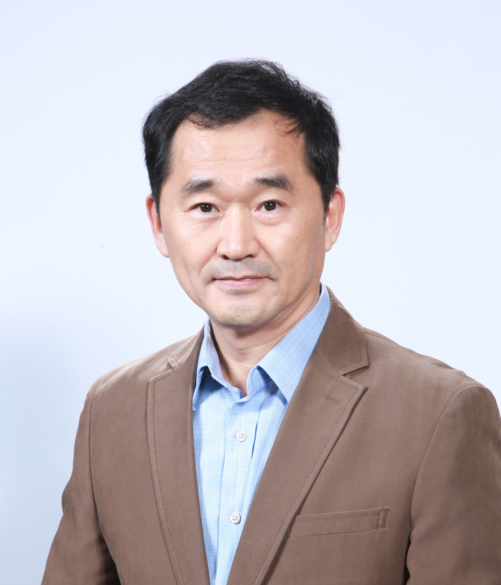

| Bongki
Moon is a professor of Computer Science & Engineering at
Seoul National University. He joined the faculty of the University in 2013.
Prior to that, he had been a professor of Comptuer Science at
the University of Arizona from 1997 till early 2013, and
he had worked for the research divisions of Samsung Electronics and
Samsung Advanced Institute of Technology from 1985 till 1990.
He received his PhD degree in Computer Science
from University of Maryland, College Park, in 1996,
and his MS and BS degrees in Computer Engineering
from Seoul National University in 1985 and 1983, respectively.
Contact Information : (phone) +82-2-880-1842, (email) bkmoon at snu ac kr |
 |